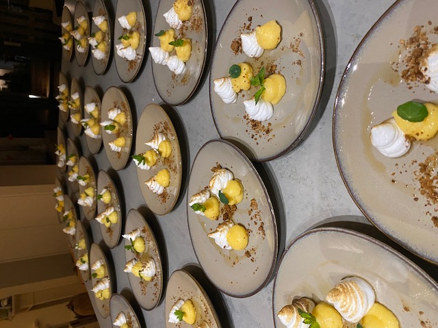
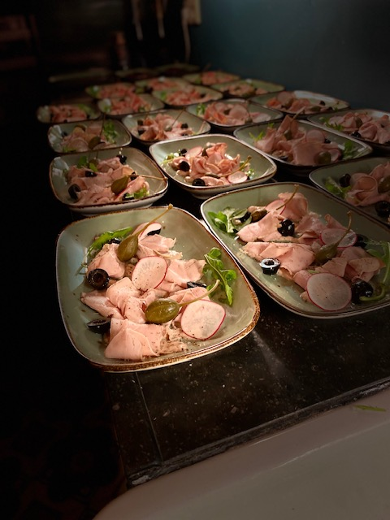
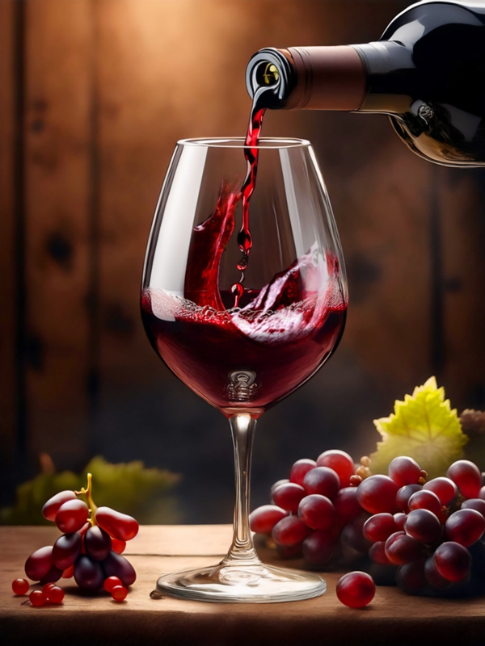

Voor alles wat feestelijk is
Celebrations
Van een intiem verjaardagsdiner tot een bruidsreceptie — wij maken van elk feestelijk moment een culinaire herinnering die bijblijft.
Celebrations
Van verjaardagen en familiediners tot bijzondere mijlpalen wij creëren een stijlvolle en zorgeloze culinaire ervaring in uw eigen omgeving.
Met persoonlijke aandacht en verfijnde gerechten zorgen wij dat u volledig kunt genieten van het moment.
Gespecialiseerd in 21-diners en lunches.


21 Dinners
Het 21-diner is inmiddels niet meer weg te denken uit het studentenleven. Een avond vol speeches, tradities en persoonlijke momenten en vooral iets om echt naar uit te kijken.
Steeds vaker wordt dit gevierd in een vertrouwde, huiselijke setting, samen met familie en vrienden. Wij denken graag met je mee over de invulling van de avond, zodat het diner perfect aansluit bij jouw stijl en wensen.
Of het nu gaat om het menu, het thema of de opbouw van de avond alles is mogelijk en wordt op maat afgestemd.
Jij geniet van het moment, wij zorgen voor de rest.
Ook in de timing passen we ons aan. We laten ons leiden door het verloop van de avond, zodat speeches en momenten alle ruimte krijgen en het diner daar naadloos op aansluit.
Zo ontstaat een ontspannen, persoonlijke en tot in detail verzorgde avond.
Wijn Arrangement
Wijn per fles
De wijnen worden geleverd per fles, waarbij de prijs bestaat uit de inkoopsprijs plus een vast kurkengeld per fles, met een vooraf afgesproken maximale inkoopprijs.
Het kurkengeld dekt mijn werkzaamheden zoals research, inkoop en het dragen van het inkooprisico. Je betaalt uitsluitend voor de flessen die daadwerkelijk worden geopend en geserveerd.
Wijnarrangement per glas
Daarnaast kan ik een bijpassend wijnarrangement per gang verzorgen, waarbij elke gang wordt begeleid door een zorgvuldig geselecteerd glas wijn. Dit zorgt voor een complete en verfijnde smaakbeleving, vergelijkbaar met een restaurantervaring.
